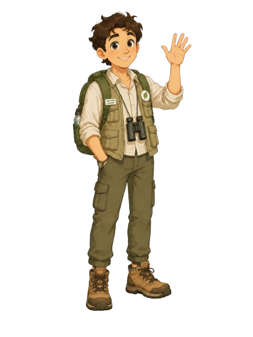
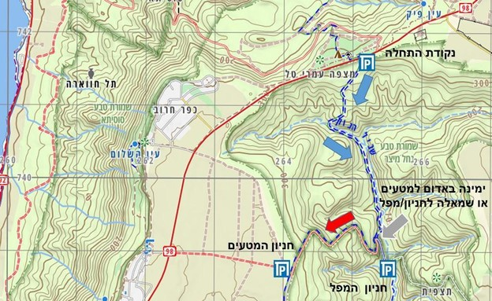

נחל מיצר ומפל מיצר

- אורך מסלול: 6 קילומטרים
- רמת קושי: בינוני
- אפשרות כניסה למים: כן, לפי עונה
- מתאים ל:משפחות ומיטיבי לכת
נחל מיצר שבדרום רמת הגולן הוא אחד מיובליו של הירמוך. המסלול, שאורכו נע בין 4 ל-6 ק"מ (כ-3–4 שעות הליכה), מתאים לכל המשפחה (ללא כלבים) ומציע חלון הזדמנויות מרהיב לחוויה ירוקה ופורחת, במיוחד בחורף ובאביב. המסלול אינו מעגלי ומחייב הקפצת רכבים.

הגעה ונקודות סיום: התחלה: על כביש 98, כ-2 ק"מ מדרום לקיבוץ אפיק (בוויז: "נחל מיצר רמת הגולן"). סיום: נוסעים דרומה בכביש 98 בין כפר חרוב למבוא חמה, ופונים בדרך עפר. ניתן לחנות ליד מטע השקדיות או להמשיך בזהירות בירידה משובשת (לא מומלצת לרכב פרטי לאחר גשמים) עד לחניון התחתון, כדי לחסוך עלייה של 2 ק"מ בסוף הטיול.
המסלול ומה רואים בדרך: מהחניה יורדים כקילומטר בירידה תלולה המעבירה משכבת בזלת לשכבת קרטון, עד לוואדי ברבארה. שם פוגשים עץ אלון עתיק ופונים שמאלה עם הסימון הכחול לתוך "ג'ונגל" מוצל. ההליכה מישורית וקלה, ועוברת בין עצי אלון תבור, אלה אטלנטית, ופריחה עונתית עשירה של כלניות, פרגים וכליל החורש (באפריל). באזור זורמים ממי הנחל וניתן להשתכשך בבריכות קטנות ולמצוא עדויות לפעילות חזירי בר וצבאים. לאחר כ-2 ק"מ באפיק, עולים כ-5 דקות ומגיעים לכביש הפנימי. מכאן פונים שמאלה לעבר הרכב, או ממשיכים עוד כחצי קילומטר בסימון הכחול אל מפל מיצר – מפל מרשים בגובה 9 מטרים הזורם בחורף ולרגליו בריכת שכשוך, ממנה חוזרים אל הרכב השני.
